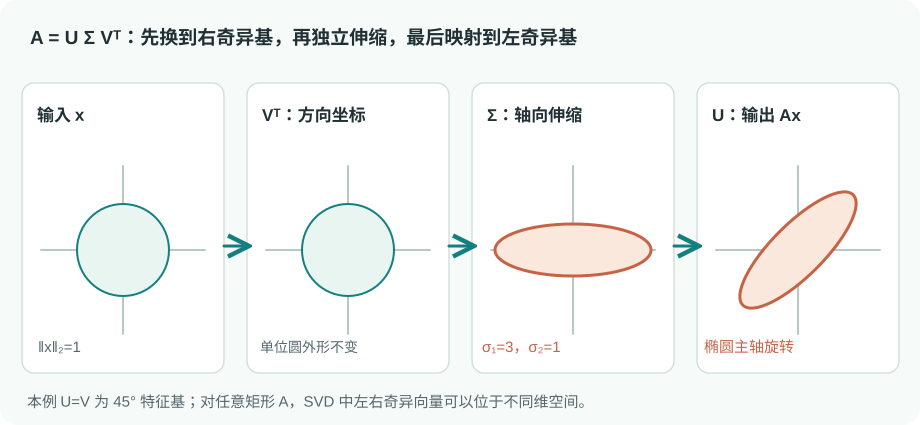
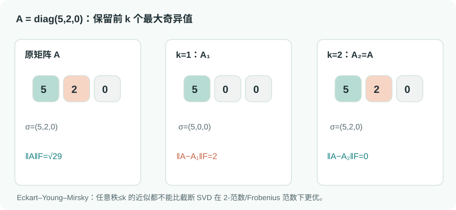

01 / 不是每个矩阵都能对角化，为什么每个矩阵都有 SVD？
一个矩形矩阵 A∈R^{m×n} 既不要求方阵，也不能直接谈通常意义的特征值分解；但它总能把输入单位球变成输出空间中的椭球（或低维退化椭球）。奇异值分解（SVD）用输入正交方向、伸缩倍率和输出正交方向来记录这件事。

对实矩阵的完整 SVD，U 是 m×m 正交矩阵，Σ 是 m×n 非负“矩形对角”矩阵，V 是 n×n 正交矩阵。复数情形的转置要替换成共轭转置。奇异值按 σ₁≥σ₂≥…≥0 排列，数量为 min(m,n)。
02 / 从 AᵀA 构造左右奇异向量
矩阵 AᵀA 为 n×n 对称半正定矩阵，因此有正交特征基 vᵢ，其特征值非负。对于正奇异值，定义 σᵢ=√λᵢ(AᵀA) 以及 uᵢ=Avᵢ/σᵢ，可证明这些 uᵢ 互相正交。由此得到 Avᵢ=σᵢuᵢ。
零奇异值对应 A 的零空间，但公式 Avᵢ/σᵢ 在此不能用。完整 SVD 中剩余的左奇异向量通过正交补补齐。不要为零奇异值除法，也不要把左右奇异向量看成总处于同一个空间。
对本例 A=[[2,1],[1,2]]，取 v₁=u₁=(1,1)/√2、v₂=u₂=(1,−1)/√2，就得到 Σ=diag(3,1)，可直接核验 UΣVᵀ=A。
03 / Full、thin 和 rank-k 截断 SVD 分别改变什么？
令 p=min(m,n)、r=rank(A)。完整 SVD 使用 m×m 和 n×n 的正交因子；精简（thin/economy）SVD 通常取 U∈R^{m×p}、Σ∈R^{p×p}、V∈R^{n×p}，再只保留非零奇异三元组得到紧（compact）SVD 的 r 列因子。不同库对 thin 和 compact 的命名可能不同，应以维度为准。
截断到 k 项则得到 A_k=Σ_{i=1}^{k} σᵢ uᵢvᵢᵀ，它的秩不超过 k；在所有同样秩上限的矩阵中，截断 SVD 最小化谱范数与 Frobenius 范数误差。

04 / Eckart–Young–Mirsky 的误差到底是什么？
对奇异值降序排列且 k<r 的矩阵，最佳 rank-k 近似的两个精确误差是：
当 k≥r 时，截断结果就是原矩阵，误差为 0。上述定理是矩阵重建误差的最优性结论，不等于直接保证分类准确率、推荐质量或泛化能力；实际应用还要根据任务定义评估指标。
对示例 σ=(5,2,0)，总 Frobenius 能量为 29。rank-1 保留的能量比例为 25/29≈86.2%，丢弃平方能量 4/29。即使“保留能量较高”，也未必能保留任务关注的局部信息。
05 / PCA、压缩与 SVD 的边界
对中心化样本矩阵 X，X=UΣVᵀ 的右奇异向量是样本协方差 XᵀX/(N−1) 的主方向；对应主成分方差为 σᵢ²/(N−1)（N>1，按行存样本）。如果不中心化，右奇异向量仍描述原始二阶矩方向，但不能直接解释为中心化 PCA。
图像矩阵的低秩重建在 Frobenius 意义下保留最大平方能量。然而二维图像的全矩阵秩未必非常低，截断等级和视觉效果都应通过数据检验；在大规模推荐系统中还要处理缺失观测、偏置与正则化，不能将缺失值直接当作零并宣称得到无偏估计。
06 / 复算：正交因子、重建与低秩误差
from math import sqrt, isclose
s = 1/sqrt(2)
U = ((s,s),(s,-s))
D = ((3.,0.),(0.,1.))
def mul(A,B):
return tuple(tuple(sum(A[i][k]*B[k][j] for k in range(len(B)))
for j in range(len(B[0]))) for i in range(len(A)))
UT = tuple(zip(*U))
A = mul(mul(U,D),UT)
for row,expected in zip(A,((2,1),(1,2))):
for a,b in zip(row,expected): assert isclose(a,b,abs_tol=1e-12)
sigmas=(5,2,0)
rank1_error = sqrt(sum(x*x for x in sigmas[1:]))
assert rank1_error==2
print("SVD reconstruction OK; rank-1 error =",rank1_error)预期：SVD reconstruction OK; rank-1 error = 2.0。前一部分检验的是可复算的 2×2 SVD；后一部分单独验证奇异值为 (5,2,0) 的对角样例。
参考资料与扩展阅读
文中的矩阵、示例值和图解是为了揭示机制而构造的低维算例；它们不替代定理证明，也不是数值库性能测试。